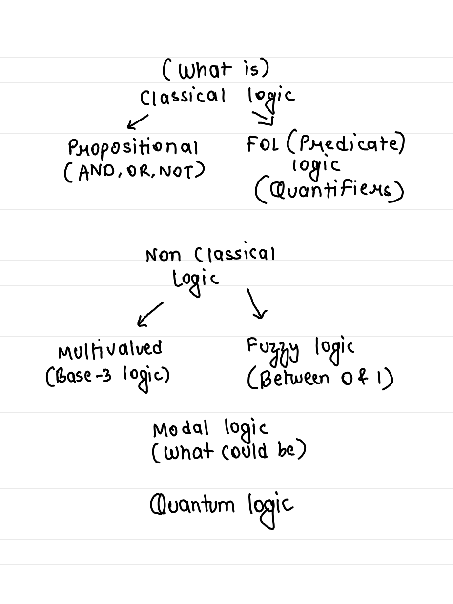
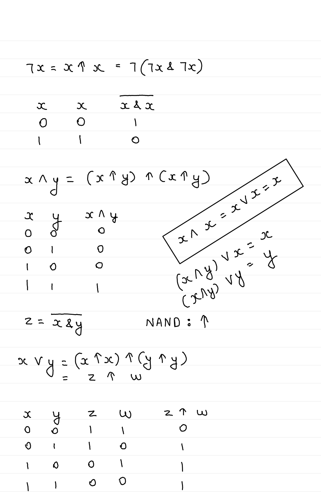
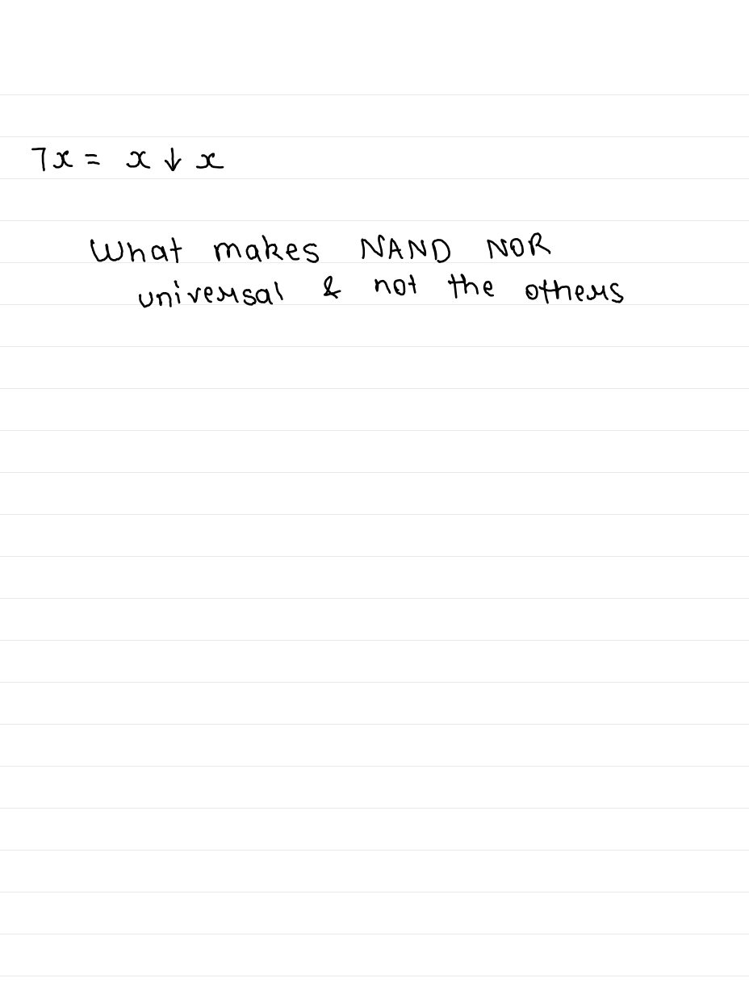
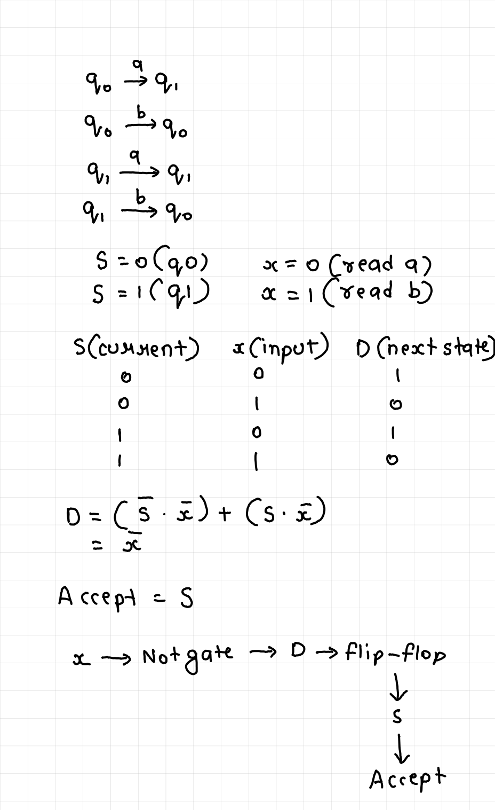
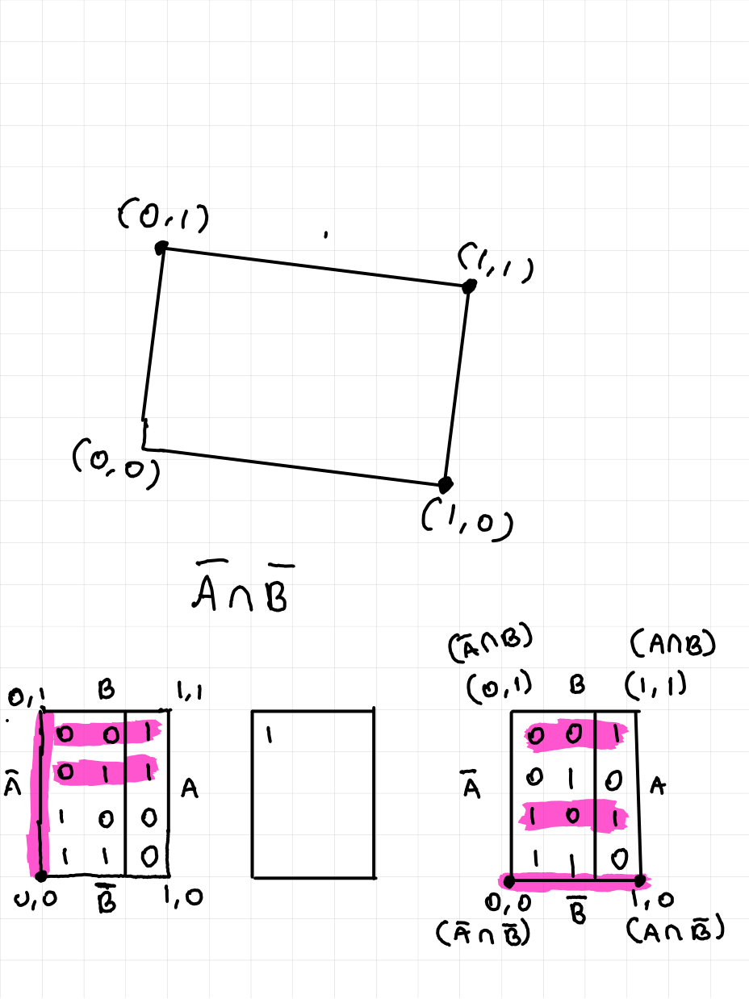

It began with a tree drawn by hand — classical logic at the top (propositional AND / OR / NOT, then FOL with quantifiers), non-classical logic below it (multivalued base-3, fuzzy between 0 and 1), and beneath those, modal logic (“what could be”) and quantum logic. One question ran through all of it: if truth is not a clean yes / no, which rulebook still holds?
This lab is that question in tool form. Toggle a gate. Type a sentence and watch it run under five logics side by side. Break distributivity with a quantum projection. Everything here is checked against real computation, not asserted.
The switch logic. Every binary gate is one of just 16 possible truth tables on two inputs; a handful of them are the ones we name. Pick a gate, flip A and B, and watch the output row light up. Or write your own sentence in the box.
A & !B · (A | B) ^ C · NAND(A,B)
Handwritten in the notes, studying binary: “Why NAND & NOR are universally complete?” and later, “What makes NAND NOR universal & not the others.” The answer is constructive — build NOT, AND and OR out of NAND alone, and you have built everything.
Exhaustive construction: start from the projections x, y and repeatedly apply the single gate; count how many of the 16 two-input truth tables appear. NAND reaches 16 / 16, NOR reaches 16 / 16. No other two-input gate is universal on its own — that is what “not the others” means.
The comparison is the product. Type a sentence; it is evaluated under classical logic, Kleene K₃ (the logic of the unknown — the one SQL runs on), Łukasiewicz Ł₃ (the logic of the not-yet — the sea battle), and fuzzy logic (truth as a percentage), plus SQL’s NULL handling.
Note the one row that separates the two three-valued logics: in Kleene, A → A is U at the middle value (not a tautology); in Łukasiewicz it is 1. Same table everywhere else.
Run each law through every logic and ask: is it a tautology here? This matrix is computed live, not quoted.
Every database blank is a third truth value. This is Kleene’s logic wearing a WHERE clause — and it bites. Evaluate the classic expressions below, then run the “NOT IN trap” that turns an 8-row result into 0.
Measured behaviour: FALSE dominates AND, TRUE dominates OR, and NOT of the unknown is the unknown.
A 10-row table, ids 1…10. Query id NOT IN (1, 2, NULL).
Not uncertainty — gradation. “The room is warm” is 0.6 true, and AND is the minimum, OR the maximum, NOT the complement. Push the memberships and watch the laws bend, then run the little two-rule fan controller.
A OR NOT A at 0.6 is 0.6, not 1 — fuzzy truth is graded, not a probability. De Morgan still holds.
Two rules: if temp is hot, fan is fast · if temp is mild, fan is slow. Centroid defuzzification.
Possible worlds, Kripke 1959/1963. □p means “p is true in every world I can see”; ◇p means “in some world I can see”. Click a world’s p, and toggle which worlds it can see. Watch what happens at a dead end.
World 0 sees a p-world and a not-p-world: □p false, ◇p true. World 1 sees nothing: □p vacuously true, ◇p false. The same sentence flips because the frame changed.
◇p ≡ ¬□¬p holds on every frame; that is an identity of the logic, not a coincidence of this picture.
Birkhoff–von Neumann 1936. A yes/no question about a quantum system is a projection; the lattice of projections is orthomodular but not distributive. Three lines in the plane — drag their angles and watch the distributive law break, measured with real 2×2 projection matrices.
With p, q, r at 0°, 45°, 90°: the left side is the line p (distance 0), the right side is the zero subspace (norm 0) — they disagree, so distributivity fails. Spin-x and spin-z projections do not even commute (‖PₓP_z − P_zPₓ‖ = 0.707), which is the reason the order of asking matters.
A separate thread from the notes: enumerate all Boolean functions and sort them by their structural properties. There are 16 two-variable functions and 256 three-variable ones. Filter them live.
Another page from the notes: a two-state machine over {a, b} reduced to a single NOT gate and a flip-flop. Type a string and run it.
The machine accepts exactly the strings whose last symbol is a — the state S is “the last symbol was a”, so D = ¬x flips it back to q₀ the moment a b arrives.
The primary sources behind this lab — the original handwritten notes, and the verification script that every number here was checked against.





Every quantitative claim on this page is computed live in your browser from the same definitions used in the companion script experiments/types-of-logic-experiments.py (34 / 34 checks passing). The two-variable and three-variable Boolean classifications regenerate the data/ CSVs.
Two branches the field would add that the original tree did not list: intuitionistic / constructive logic, and paraconsistent logic (contradiction-tolerant). And the von Neumann-ordinals-vs-logic-gates question, still awaiting its own words.